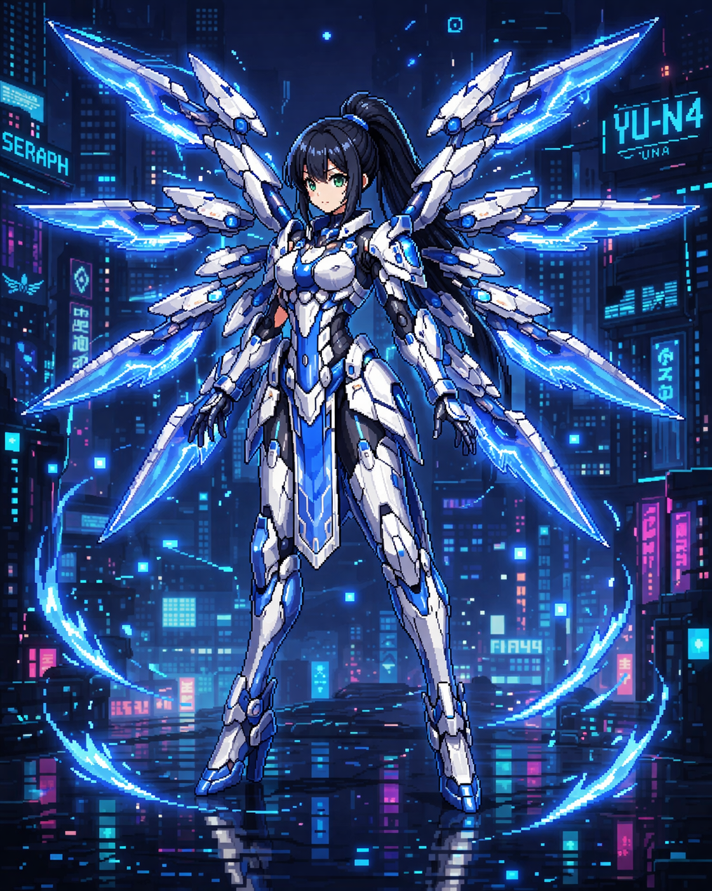

Yuna (YU-N4)
An aerial combat unit specialized in mobility and precision. YU-N4, or as she prefers to be called, Yuna, was once one of Seraph Corporation's battle androids. After an incident involving injured civilians, she began to question her purpose and did everything she could to break free from corporate control. After escaping Eden Prime, she returns with a single goal: to save her sister, XU-N5.
エアー・コンバット・ユニット・YUーN4